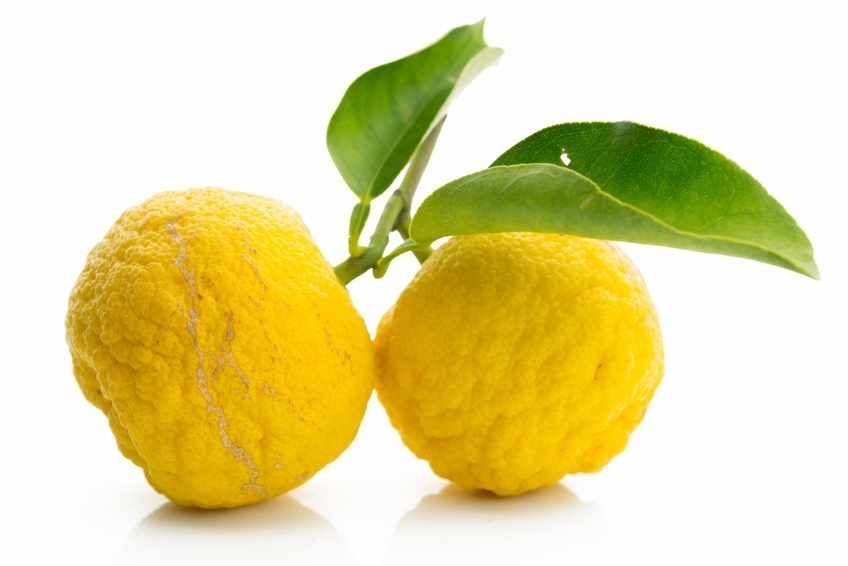

Unsere Feinkost Auswahl
Früchte aus aller Welt

Japanische Yuzu Zitrone
Es reicht ein winziger Ritz an der Schale und schon verströmt sie ihr unglaubliches Aroma: Yuzu, die japanische Zitrone, ist eine aromatische Frucht mit einmaligem Duft,eine perfekte Mischung aus kräftiger Limette, mit Nuancen von Grapefruit und Mandarine
30,00 pro kg

Zucchiniblüte
Die Blüten sind im rohen Zustand sehr zart und werden beim Backen etwas fester und schmecken leicht knusprig und blumig.
Auf jeden Fall schmecken die Blüten anders als die Zucchini selbst.
Die Blüten haben einen feinen eigenen Geschmack, der durch eine milde Füllung besonders zur Geltung kommt..
32,85 pro 40g

Artischocke
Roh ist das Gemüse nämlich ungenießbar. Erst nachdem Sie die Artischocke richtig zubereitet haben, entfaltet sie ihren feinen Geschmack.
Je nach Sorte und Zubereitungsart reicht die Geschmackspalette von leicht süßlich über nussig bis etwas herb.
Die eingelegte Variante aus dem Kühlregal schmeckt leicht säuerlich
50,00 pro Kg
Das beste vom Fleisch

Kobe-Wagyu Rind
Das wertvollste Fleisch der Welt stammt aus Japan: Original Wagyu-Rinder zeichnen sich nicht nur durch den hohen Marmorierungsgrad ihres Fleisches aus.
Sie sind, verglichen mit anderen Rinderarten, wie dem Angus-Rind, von besonders großer und kräftiger Statur.
Ihr Fleisch ist nicht nur cholesterinarm und nährstoffreich, sondern schmeckt auch noch herrlich aromatisch und zergeht dabei auf der Zunge.
489,00 pro kg

Kobe Beef
Das Roastbeef aus dem hinteren Teil des Rinderrückens ist das Teilstück,
aus dem die allseits beliebten Rumpsteaks beziehungsweise Strip Loins geschnitten werden.
Ein Strip Loin von Kobe Beef jedoch ist mit nichts zu vergleichen und eine Kategorie für sich.
Das Teilstück vom Japanese Black Wagyu, dem wohl edelsten Rind der Welt, ist besonders feinfaserig zart, mürbe und extrem marmoriert.
Eine echte Delikatesse also, die sich mühelos in die Reihe von Luxuslebensmitteln wie Kaviar, Langusten oder Champagner eingliedert.
429,00 pro kg
Fisch spezialitäten

Hummer
Erst beim Kochen spaltet sich das Astaxanthin ab und macht den Hummer so hummerrot.
Hummer schmeckt angenehm nach Meer und ein bisschen wie Garnelen oder Languste,
allerdings mit einer ganz eigenen Note und noch delikater.
65,00 pro kg

Trüffel spezialitäten

Perigold Trüffel
Die Perigord Trüffel hat im Gegensatz zur Alba Trüffel einen dezenten aromatischen Geruch, dafür aber einen intensiven Geschmack. Der Geruch ist mit einer erdigen, an den Wald erinnernden
sowie einer leicht süßlichen Moschusnote, in sich schon außergewöhnlich.
1,60 pro g